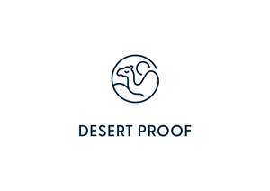

Trade Mark Journal No.2025/022 30 May 2025
UK00004203391 14 May 2025 (3)

- Class 3
- Non-medicated cosmetics and toiletry preparations; Non-medicated dentifrices; Perfumery, essential oils; Adhesives for cosmetic use; After sun creams; After-shave preparations; After-shave; After-sun lotions; Air fragrancing preparations; Anti-ageing creams; Artificial eyelashes; Artificial nails; Baby oils; Baby wipes; Bath and shower gels; Bath bombs; Bath oils; Bath preparations; Beauty creams; Bleach; Bleaching preparations; Blushers; Body butters; Body cleaning and beauty care preparations; Body scrubs; Body wash; Breath fresheners; Cleaning and fragrancing preparations; Cologne; Concealers; Cosmetics; Dentifrices; Deodorants and antiperspirants; Essential oils and aromatic extracts; Essential oils; Exfoliants; Eye liner; Eye makeup; Eyebrow pencils; Eyelashes (False -); Eyeliner; Eyeshadows; Face powders; Face wash; Facial cleansers; Foundation; Fragrances; Hair bleaches; Hair colourants; Hair conditioner; Hair dye; Hair lotions; Hair preparations and treatments; Hair removal and shaving preparations; Hand washes; Lip balm; Lipstick; Make-up preparations; Make-up removing preparations; Make-up; Makeup; Massage oil; Moisturiser; Mouthwash; Nail cosmetics; Nail enamel; Nail gel; Nail varnish; Perfume; Perfumery and fragrances; Pre-moistened cosmetic wipes; Self tanning preparations; Shampoo; Shaving preparations; Shower gel; Shower preparations; Skin care cosmetics; Skin, eye and nail care preparations; Soaps and gels; Soaps; Sun block preparations; Sun creams; Sun screen; Toiletries; Tooth whitening preparations; Toothpastes; Gel mascara; Mascara; Lip gloss; Tinted moisturiser; Beauty serums; Hair serums; Non-medicated skin serums; Serums for cosmetic purposes; Makeup fixer; Makeup setting sprays; Contour makeup; Highlighter makeup; Gift sets containing cosmetics; Gift sets containing toiletries; Makeup primer; Face scrub; Face cream; Eye cream.
Abdulrahman Saad Al Rashid & Sons Company
Representative: Brand Protect Limited